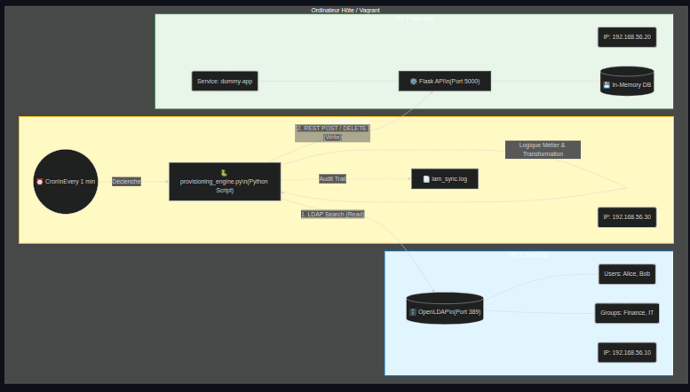
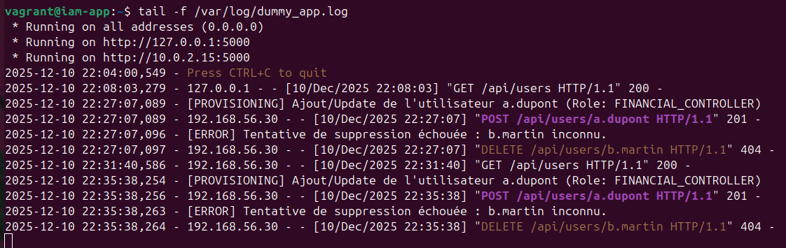

Laboratoire IAM — Provisioning automatique entre LDAP et application SaaS
Ce projet est un laboratoire d’intégration IAM que j’ai monté pour
comprendre en profondeur les défis techniques du provisioning d’identités entre un
annuaire et une application métier.
Le principe est simple : simuler un réseau d’entreprise avec un annuaire
LDAP (source de vérité), une application cible de type SaaS (API REST) et un serveur
de contrôle jouant le rôle de moteur IAM.
L’objectif est d’automatiser le cycle de vie JML (Joiner, Mover, Leaver)
de bout en bout.
Contexte & Objectif
Le contexte : « Je voulais comprendre les défis techniques de
l'intégration d'application. J'ai donc monté un laboratoire simulant un réseau
d'entreprise. »
Ce réseau est réduit mais réaliste : l’annuaire représente un Active Directory,
l’application cible un SaaS interne, et le serveur de contrôle un moteur IAM qui
orchestre la synchronisation.
Le challenge technique : « Mon objectif était d'automatiser le cycle
de vie JML (Joiner, Mover, Leaver). »
Joiner : quand je crée un utilisateur dans le LDAP, un script Python
le détecte et crée automatiquement le compte dans l’application cible.
Mover : une matrice de rôles (RBAC) mappe les groupes LDAP vers les
rôles de l’application. Si l'utilisateur est dans le groupe Finance,
il obtient automatiquement un rôle avancé dans l’application
(ex : FINANCIAL_CONTROLLER).
Leaver : si l'utilisateur est désactivé dans le LDAP, le script coupe
automatiquement ses accès sur l'application (déprovisioning).
Conclusion technique : « Cela m'a permis de maîtriser les librairies
Python comme ldap3 et requests, et de comprendre
l'importance d'avoir une source de vérité fiable pour les identités. »
Architecture & Scénario
L’architecture : « J'ai déployé 3 serveurs sous Linux : un
LDAP (simulant l'Active Directory), une
Application Cible (simulant un SaaS avec une API REST), et un
Serveur de Contrôle. »
iam-ldap (192.168.56.10) OpenLDAP — annuaire d’entreprise simulé.
Contient les unités organisationnelles, les groupes et les comptes d’utilisateurs
(ex : Alice active, Bob inactif).
iam-app (192.168.56.20) Application Flask exposant une API REST
/api/users — simule un SaaS interne.
Les comptes sont créés/supprimés via des appels HTTP
POST / DELETE.
iam-control (192.168.56.30) Serveur de contrôle — moteur IAM.
Exécute le script Python provisioning_engine.py qui lit le LDAP
et appelle l’API de iam-app.

Flux JML : l’annuaire LDAP est la source de vérité, le serveur de contrôle
synchronise automatiquement les comptes vers l’application cible via API REST.
Démarche & Scripts principaux
Infra as Code : création du labo avec Vagrant
L’ensemble du laboratoire est décrit dans un Vagrantfile unique :
il déploie les 3 VMs Ubuntu, attribue les IP privées et installe les dépendances
(OpenLDAP, Flask, Python, bibliothèques IAM).
# Lancer toute l'infrastructure
vagrant up
# Vérifier l'état des machines
vagrant status
# Exemple : se connecter à l'annuaire
vagrant ssh iam-ldap
Source de vérité : annuaire LDAP
Sur iam-ldap, l’annuaire est configuré avec le domaine
dc=iam,dc=lab et alimenté via un fichier
users.ldif (unités organisationnelles, groupe
Finance, utilisateurs Alice et Bob avec un statut
Active / Inactive).
Sur iam-app, une petite application Flask
dummy_app.py expose l’API /api/users et journalise
chaque opération dans /var/log/dummy_app.log.
Elle est exécutée comme un service systemd pour se rapprocher
d’un comportement de production.
# Exemple de test initial côté iam-app
curl http://localhost:5000/api/users
# Réponse attendue : {} (aucun compte provisionné au départ)
Moteur IAM : script de provisioning
Sur iam-control, le script
provisioning_engine.py implémente la logique IAM :
lecture des entrées LDAP avec ldap3, construction
d’un identifiant technique (a.dupont, etc.),
mapping groupe → rôle métier, appels à l’API via
requests pour créer ou supprimer les comptes.
# Lancer un cycle de provisioning
python3 provisioning_engine.py
Résultats
Lors d’un cycle complet, le moteur affiche par exemple :
--- Démarrage du Cycle de Provisioning ---
[INFO] Connexion au serveur LDAP iam-ldap...
[INFO] 2 identités trouvées dans l'annuaire.
[PROVISION] Traitement de a.dupont (Rôle: FINANCIAL_CONTROLLER)...
-> Succès (Compte créé/mis à jour).
[DE-PROVISION] Départ détecté pour b.martin. Suppression des accès...
-> Succès (Compte supprimé).
--- Fin du Cycle ---
En interrogeant ensuite l’API de l’application cible depuis
iam-control :
curl http://iam-app:5000/api/users
La réponse JSON montre uniquement le compte actif :
Interprétation : Alice est présente avec le rôle correct
dérivé de son groupe LDAP. Bob, marqué Inactive dans
l’annuaire, a été automatiquement déprovisionné côté application.

Synchronisation réussie : l’état de l’application reflète exactement
la source de vérité LDAP après le cycle JML.
Compétences démontrées
IAM & Provisioning :
conception d’un petit moteur de réconciliation implémentant
le cycle Joiner / Mover / Leaver.
Annuaire LDAP :
modélisation de l’arborescence, création des unités, groupes et
utilisateurs, requêtes LDAP avec ldapsearch et
la bibliothèque ldap3.
APIs REST & intégration applicative :
conception d’une API cible simple et intégration via
requests côté Python.
Infrastructure as Code & Linux :
création d’un laboratoire multi-VM avec Vagrant, configuration
automatique des paquets et des services systemd.
Ingénierie système & debugging :
analyse des logs, tests croisés avec curl,
validation du comportement JML en observant les journaux
de l’application cible.